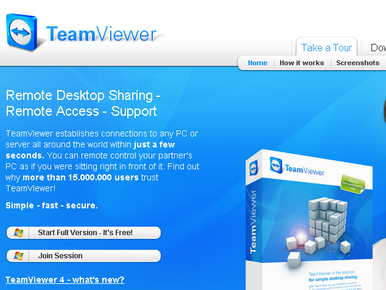
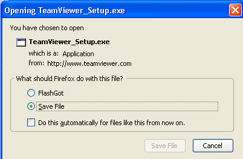
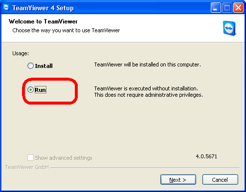
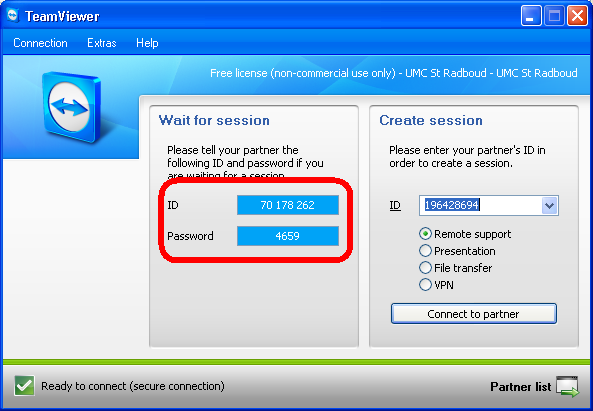

Hulp op afstand
In de meeste gevallen kunnen wij u probleem op afstand oplossen.
Vereisten hiervoor zijn:
Als u over de noodzakelijke vereisten beschikt,
kunt u het beste een afspraak maken (per mail of telefoon) met:
Stef Mientki
tel: 024 361 39 05


Nadat het programma is gedownload, start u het programma, hierna verschijnt het volgende scherm,
u hoeft het programma niet te installeren, maar enkel te draaien !!

Volg gewoon de stappen die het programma aangeeft en uiteindelijk belandt u in het volgende scherm

Neem per telefoon contact met ons op (wel van te voren een afspraak maken voor ongeveer 15 .. 30 minuten),
en geef de 2 nummers links aan ons door.
Dit ID en password zijn slechts éénmalig (en van korte duur) geldig en u hoeft dus niet bang te zijn dat wij of iemand anders later nog eens met deze codewoorden U PC overnemen (lees eventueel de beveiligings pagina van teamviewer op het internet.
Als wij aan onze kant deze codewoorden hebben ingetikt, krijgen wij uw beeldscherm en toetsenbord te zien, en kunnen op dat moment uw gehele PC bedienen (u kunt dat zelf ook nog steeds). U kunt zien dat we meekijken, doordat de kleur van uw desktop iets wijzigt. Daarnaast houden we uiteraard telefonisch contact met elkaar